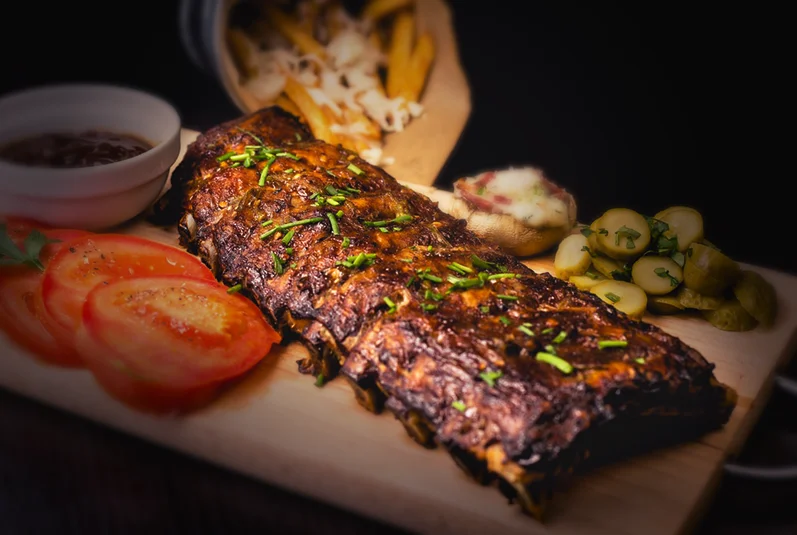
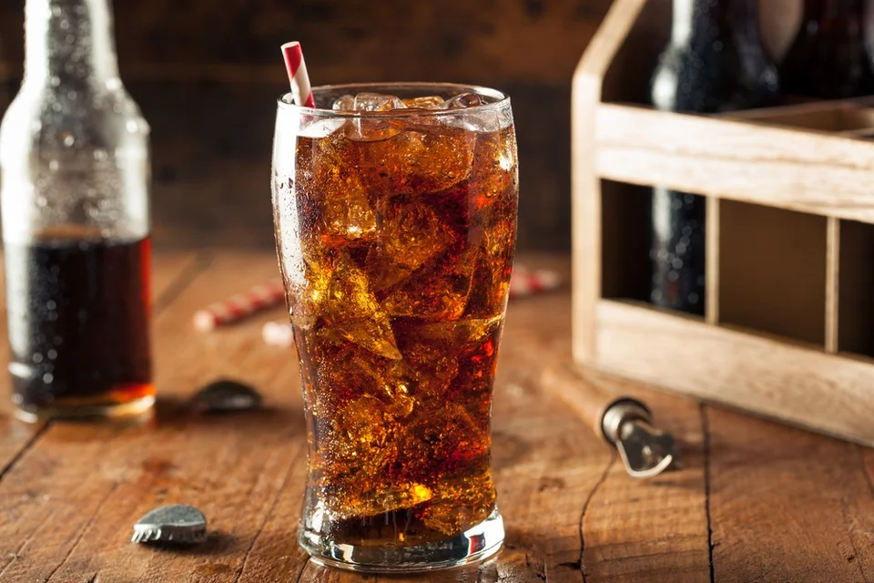
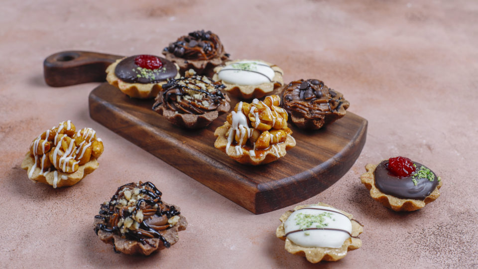

No Le'Mushroom Buffet, a seleção de carnes é uma verdadeira celebração da excelência culinária. Trabalhamos com cortes premium, provenientes das melhores fontes, que são meticulosamente preparados para garantir uma textura suculenta e um sabor inigualável. Nossos chefs especializados utilizam técnicas de tempero e cocção que realçam a riqueza natural de cada peça, oferecendo uma experiência gastronômica que combina tradição e inovação. Cada corte é escolhido a dedo para assegurar a máxima qualidade e frescor, proporcionando uma refeição que é tanto um deleite para o paladar quanto uma experiência memorável.
Saiba mais

No Le'Mushroom Buffet, nossos refrigerantes são selecionados com o mesmo cuidado e atenção dedicados aos nossos pratos. Trabalhamos com marcas renomadas que garantem a mais alta qualidade e frescor em cada garrafa. Desde os clássicos refrescantes até as opções artesanais mais exclusivas, nossos refrigerantes são armazenados e servidos na temperatura ideal para proporcionar uma experiência de sabor impecável. Cada gole é uma explosão de sabor e efervescência, perfeitamente complementando a riqueza de nossos pratos e elevando sua experiência gastronômica a um novo patamar.
Saiba mais

Os doces do Le'Mushroom Buffet são uma obra-prima de sofisticação e sabor. Elaborados por confeiteiros altamente qualificados, cada sobremesa é uma sinfonia de ingredientes finos e técnicas requintadas. Utilizamos apenas os melhores chocolates, frutas frescas e ingredientes premium para criar delícias que encantam tanto o paladar quanto os olhos. Nossas criações doces são preparadas com precisão, garantindo texturas perfeitas e sabores equilibrados que são a culminação de uma experiência culinária de alto nível. Cada sobremesa é uma celebração da arte da confeitaria, destinada a oferecer um final memorável e sublime para sua refeição.
Saiba mais
© 2024 Le'Mushroom Buffet. Todos os direitos reservados. Proibida a reprodução, distribuição ou qualquer outra forma de utilização dos conteúdos sem a devida autorização.